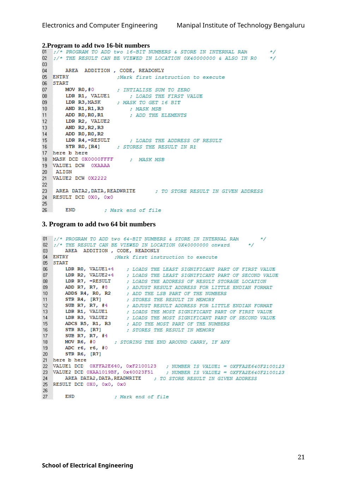

Copyable text transcription
OCR-generated from the original manual page. Check register names, labels, constants and punctuation against the reference image before using.
Electronics and Computer Engineering Manipal Institute of Technology Bengaluru
2.Program to add two 16-bit numbers
O01 ;/* PROGRAM TO ADD two 16-BIT NUMBERS & STORE IN INTERNAL RAM */
02 ;/* THE RESULT CAN BE VIEWED IN LOCATION 0X40000000 & ALSO IN RO */
03
04 AREA ADDITION , CODE, READONLY
05 ENTRY ¢Mark first instruction to execute
06 START
07 MOV RO, #0 ; INTIALISE SUM TO ZERO
08 LDR R1, VALUE1 ; LOADS THE FIRST VALUE
09 LDR R3,MASK ; MASK TO GET 16 BIT
10 AND R1,R1,R3 ; MASK MSB
"1 ADD RO,RO,R1 ; ADD THE ELEMENTS
12 LDR R2, VALUE2
13 AND R2,R2,R3
14 ADD RO,RO,R2
15 LDR R4,=RESULT ; LOADS THE ADDRESS OF RESULT
16 STR RO, [R4] ; STORES THE RESULT IN R1
17 here b here
18 MASK DCD OXOOOOFFFF ; MASK MSB
19 VALUE1 DCW OXAAAA
20 ALIGN
21 VALUE2 DCW 0xX2222
22
23 AREA DATA2, DATA, READWRITE ; TO STORE RESULT IN GIVEN ADDRESS
24 RESULT DCD 0x0, 0x0
25
26 END ; Mark end of file
3. Program to add two 64 bit numbers
01 ;/* PROGRAM TO ADD two 64-BIT NUMBERS & STORE IN INTERNAL RAM */
02 ;/* THE RESULT CAN BE VIEWED IN LOCATION 0X40000000 onward +/
03 AREA ADDITION , CODE, READONLY
04 ENTRY *Mark first instruction to execute
05 START
06 LDR RO, VALUE1+4 ; LOADS THE LEAST SIGNIFICANT PART OF FIRST VALUE
07 LDR R2, VALUE2+4 ; LOADS THE LEAST SIGNIFICANT PART OF SECOND VALUE
08 LDR R7, =RESULT ; LOADS THE ADDRESS OF RESULT STORAGE LOCATION
09 ADD R7, R7, #8 ; ADJUST RESULT ADDRESS FOR LITTLE ENDIAN FORMAT
10 ADDS R4, RO, R2 ; ADD THE LSB PART OF THE NUMBERS
"1 STR R4, [R7]} ; STORES THE RESULT IN MEMORY
12 SUB R7, R7, #4 ; ADJUST RESULT ADDRESS FOR LITTLE ENDIAN FORMAT
13 LDR Ri, VALUE1 ; LOADS THE MOST SIGNIFICANT PART OF FIRST VALUE
14 LDR R3, VALUE2 ; LOADS THE MOST SIGNIFICANT PART OF SECOND VALUE
15 ADCS R5, R1, R3 ; ADD THE MOST PART OF THE NUMBERS
16 STR R5, [R7] ; STORES THE RESULT IN MEMORY
17 SUB R7, R7, #4
18 MOV R6, #0 ; STORING THE END AROUND CARRY, IF ANY
19 ADC r6, r6, #0
20 STR R6, [R7]
21 here b here
22 VALUE1 DCD OXFFA2E640, OxF2100123 =; NUMBER IS VALUE1 = OXFFA2E640F2100123
23 VALUE2 DCD OXAA1019BF, 0x40023F51 ; NUMBER IS VALUE2 = OXFFA2E640F2100123
24 AREA DATA2, DATA, READWRITE ; TO STORE RESULT IN GIVEN ADDRESS
25 RESULT DCD 0X0, 0x0, 0x0
26
27 END ¢ Mark end of file
21
School of Electrical EngineeringView original manual page (reference)
